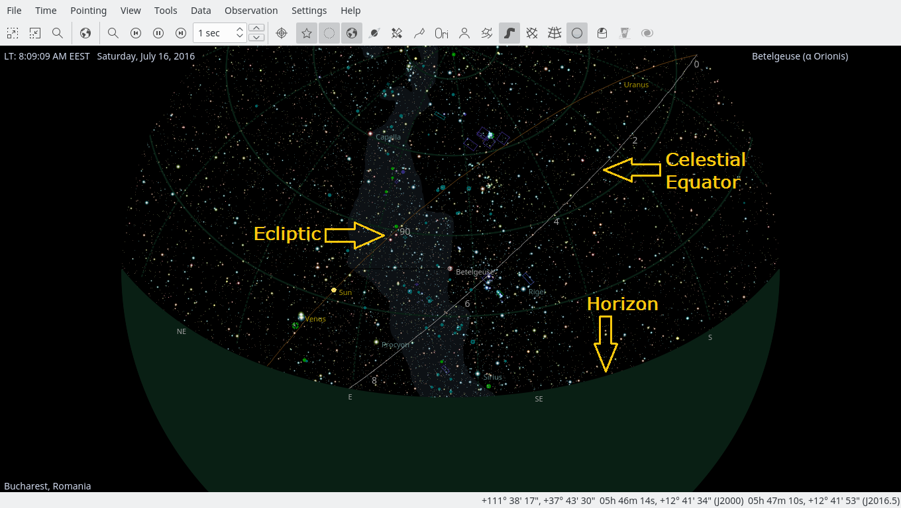

Have a Look Around
Now that we have the time and location set, let us have a look around. You can pan the display using the arrow keys. If you hold down the Shift key before panning, the scrolling speed is increased. The display can also be panned by clicking and dragging with the mouse. Note that while the display is scrolling, not all objects are displayed. This is done to cut down on the CPU load of recomputing object positions, which makes the scrolling smoother (you can configure what gets hidden while scrolling in the Configure KStars window). There are several ways to change the magnification (or Zoom level) of the display:
- Use the + and - keys
- Press the Zoom In/Zoom Out buttons in the toolbar
- Select Zoom In/Zoom Out from the View menu
- Select Zoom to Angular Size... from the View menu. This allows you to specify the field-of-view angle for the display, in degrees.
- Use the scroll wheel on your mouse
- Drag the mouse up and down with the middle mouse button pressed.
- Hold down Ctrl while dragging the mouse. This will allow you to define a rectangle in the map. When you release the mouse button, the display will zoom to match the rectangle.
Notice that as you zoom in, you can see fainter stars than at lower zoom settings.
Zoom out until you can see a green curve; this represents your local horizon. If you have not adjusted the default KStars configuration, the display will be solid green below the horizon, representing the solid ground of the Earth. There is also a white curve, which represents the celestial equator, and a brown curve, which represents the Ecliptic, the path that the Sun appears to follow across the sky over the course of a year. The Sun is always found somewhere along the Ecliptic, and the planets are never far from it.
You can configure KStars to draw or not the celestial equator and Ecliptic curves on the Sky Map using the Settings → Configure KStars submenu. Select the Guides tab and check/uncheck the Celestial equator and Ecliptic check boxes. You can also configure which colors KStars uses for drawing these curves, using the Colors tab.
